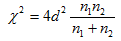
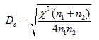

The p-value of two sample (sizes n2, n2) K-S test statistic d can be derived from χ2 distribution with 2 degrees of freedom because

To find the critical Dc of a p-value, first find the corresponding χ2 of the p-value, then Dc can be derived from
